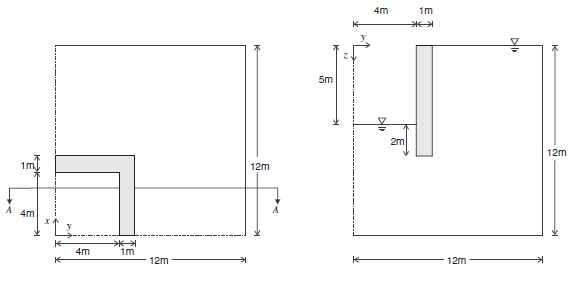
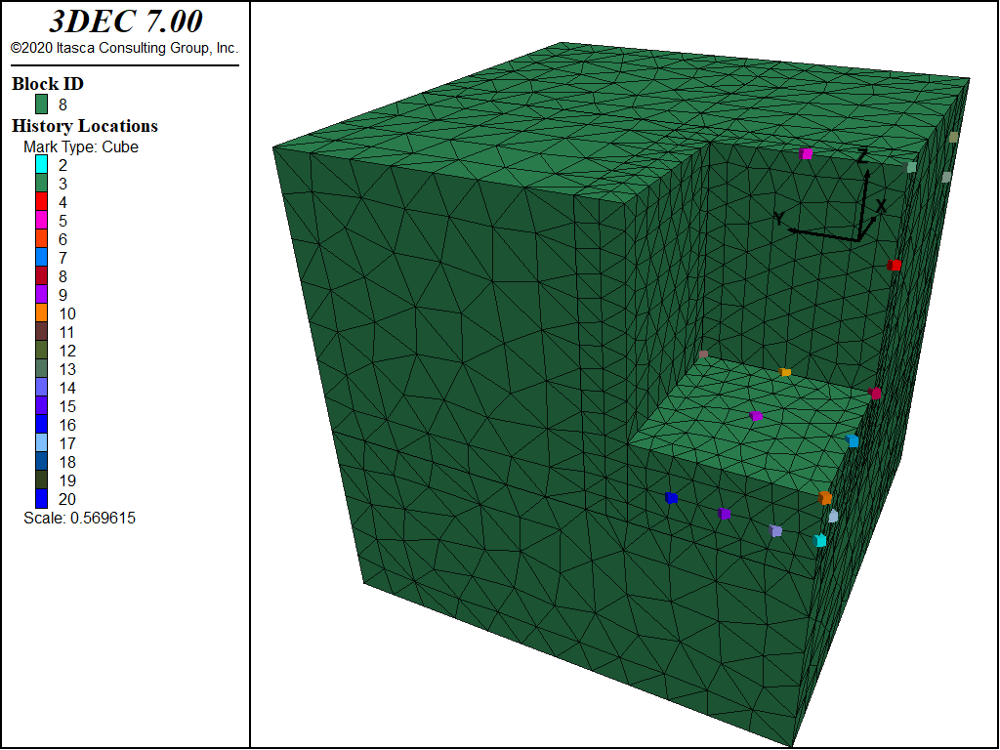
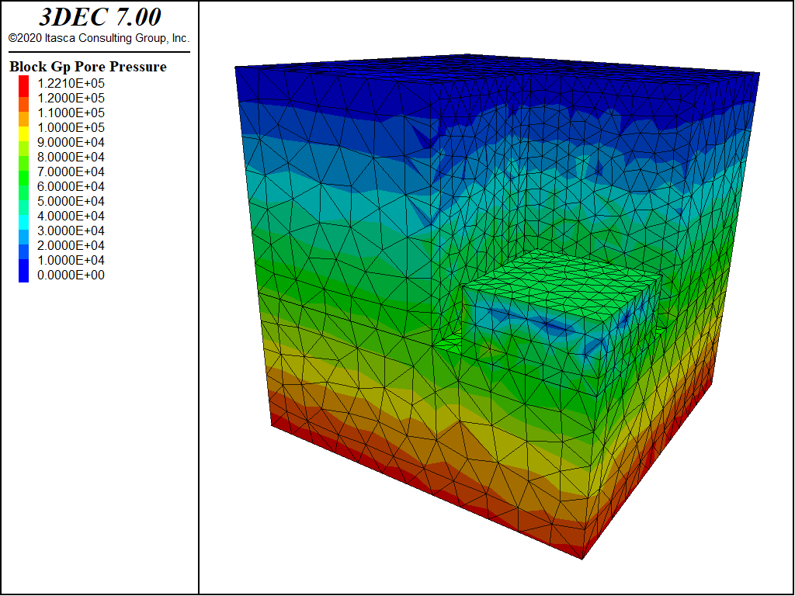
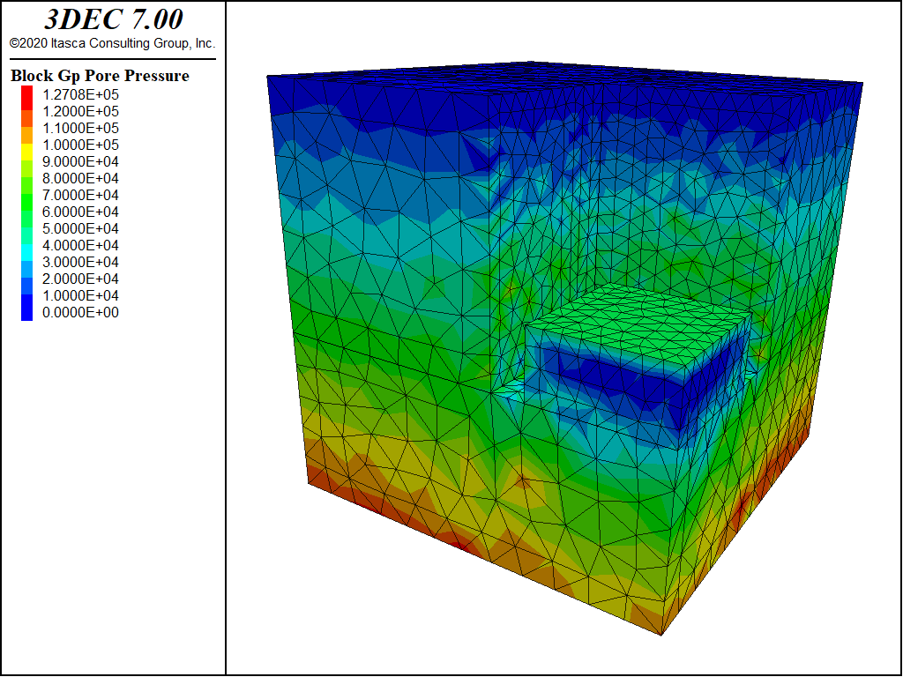
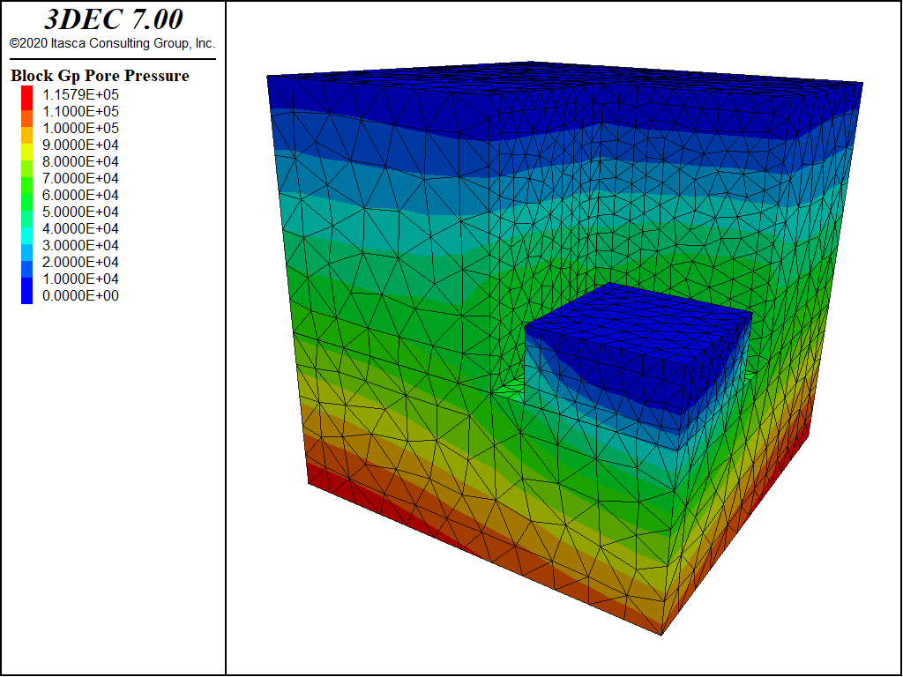
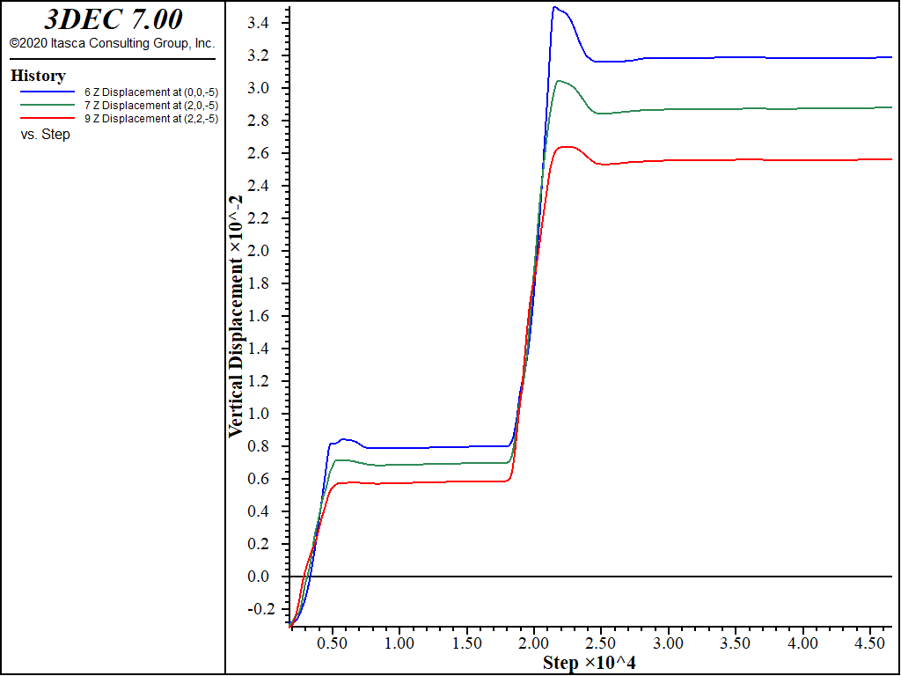
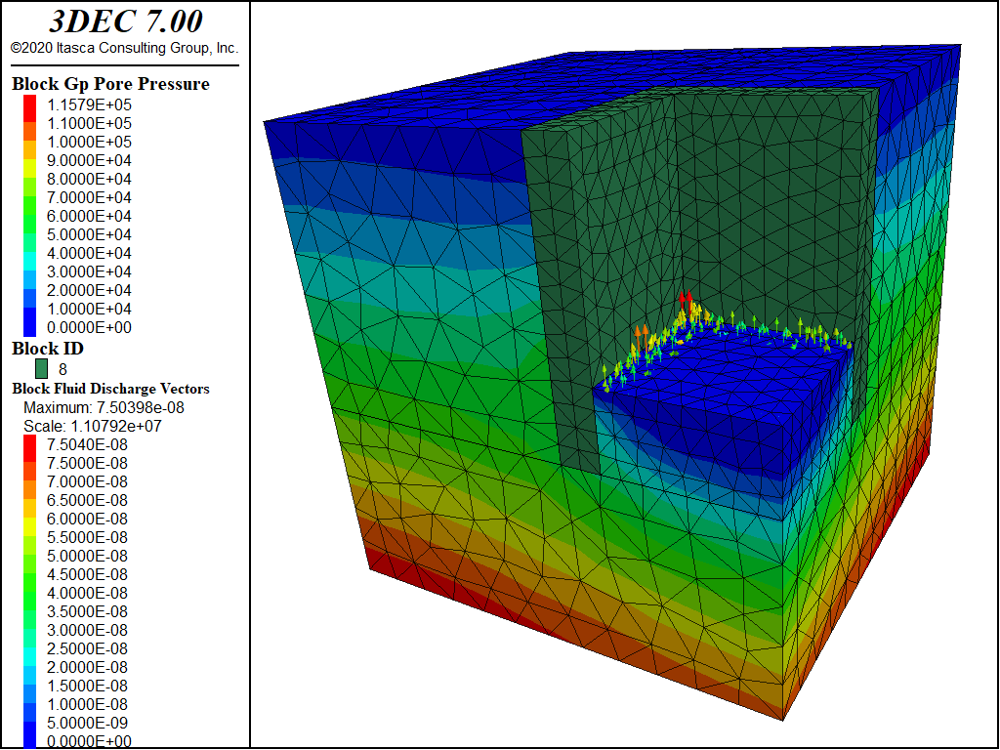

饱和土中的开挖
问题描述
注意
要在 3DEC 中查看此项目，请使用菜单命令 。选择“3DEC/ ExampleApplications/ Excavation_Saturated”，然后选择“excav.prj”进行加载。所用的主数据文件（main data file）显示在本示例的末尾。所有数据文件都可在该项目中找到。
计划在位于不透水基底上的饱和土层中进行开挖。土层厚度为 12 m。潜水面水位恒定，且与土体顶面齐平。开挖的横截面为 8 m × 8 m 的正方形，深度为 5 m。为进行此项工作，开挖场地周围已设置厚 1 m 的垂直不透水墙，墙体延伸至开挖底面以下 2 m。开挖完成后，安装水泵将水位降至开挖底面。该问题旨在评估开挖与排水在开挖底面引起的总隆起量。
该问题为三维问题，但根据对称性，分析中可只考虑区域的四分之一。定义坐标系，其原点位于土体表面平面内开挖的中心，\(z\) 轴指向下方。在本示例中，\(|x|\) = 12 m 和 \(|y|\) = 12 m 处的边界被视为对称面。图 1（Figure 1）给出了问题条件的示意图。
土体视为弹性材料。土和水具有以下属性：
体积模量，\(K\)：390 MPa
剪切模量，\(G\)：280 MPa
土体干密度，\(\rho_d\)：1200 kg/m3
水密度，\(\rho_w\)：1000 kg/m3
墙体密度，\(\rho_{wall}\)：1500 kg/m3
渗透率，\(k\)：10−12 m2/Pa-s
孔隙度，\(n\)：0.3
流体体积模量，\(K_f\)：2.0 GPa
重力矢量的模 \(g\) 可近似取为 10 m/s2。初始状态对应于（墙体施工完成后的）平衡状态，其中水平各向同性应力满足 \({\sigma'}_{xx} = {\sigma'}_{yy} = 0.4{\sigma'}_{zz}\)。


图 1：开挖——四分之一剖面。
建模步骤
3DEC 模型的尺寸为 12 m × 12 m × 12 m；网格由开挖周围 0.5 m 的网格单元以及更远处的 1 m 网格单元组成。（网格图见图 2（Figure 2）。）
注意，在本问题中，土的饱和密度值 \(\rho_d + n \rho_w\) 等于墙体密度。因此，初始状态的特征是均匀的孔隙压力分布 \(p = \rho_w g z\) 和竖向应力分布 \({\sigma}_{zz} = -(\rho_d + n \rho_w) g z\)。水平应力为 \({\sigma}_{xx}={\sigma}_{yy}=-[0.4 \rho_d + (0.4(n-1)+1) \rho_w] g z\)。这些应力施加在开挖壁面上，以模拟初始的未扰动阶段。


图 2：3DEC 模型。
为说明分步开挖的建模流程，把分析分为三个阶段。第一阶段将开挖壁面上施加的应力改为各向同性值 \({\sigma}_{xx}=\sigma_{yy}=\sigma_{zz}=- \rho_w g z\)，对应该不排水开挖中的水压力。孔隙压力固定在开挖底面与土体表面。用 model fluid active off 命令阻止水的流动。模型循环至平衡，以模拟流体流动时间尺度下的快速（不排水）开挖过程。
在第二阶段，开挖壁面上的压力被移除，并再次禁止水的流动。对模型进行循环计算，以模拟开挖内部地下水位快速下降的影响。
在第三阶段，孔隙压力在开挖底部固定为零，允许水的流动，并继续对模型进行循环计算。在位于开挖中心以下 1 m 的点（图 2（Figure 2）中的编号 2）监测孔隙压力，以判断何时达到稳态流动条件。并不试图表示固结效应的真实时间尺度；我们只关心最终的稳态。
模型包含 1728 个网格单元，需要 140 MB 的内存。该问题的数据文件“excav.dat”列于下文。
结果
三个阶段结束时的孔隙压力等值线如图 3（Figure 3）、4和5所示。


图 3：不排水开挖后的孔隙压力等值线。


图 4：开挖快速排水后的孔隙压力等值线。


图 5：地下水流动达到稳态后的孔隙压力等值线。
记录位于开挖底部的三个点（图 2（Figure 2）中的编号 6、7 和 9）竖向位移的历史记录。结果如图 6（Figure 6）所示。开挖底部的隆起出现在第一阶段和第二阶段。这是由土体移除和开挖内部排水引起的。在第三阶段，由于地下水流入该区域，底部出现轻微沉降。
第三阶段地下水流入开挖的稳态流动由图 7（Figure 7）中的流速矢量图表示。


图 6：开挖底部三个点的竖向位移时程。


图 7：流入开挖的稳态流体流动。
数据文件
excav.dat
program log on
program log-file 'excav.log'
;------------------------------------------------------
; 饱和土中的开挖
;------------------------------------------------------
model new
fish automatic-create off
model title 'Excavation in a saturated soil'
;
model config matrixflow
model large-strain off
;
; --- 几何模型 ---
block create brick 0 12 0 12 -12 -7
block create brick 0 4 0 4 -7 -5
block create brick 5 12 0 5 -7 0
block create brick 0 5 5 12 -7 0
block create brick 5 12 5 12 -7 0
block group 'soil'
block hide
block create brick 4 5 0 4 -7 0
block create brick 0 4 4 5 -7 0
block create brick 4 5 4 5 -7 0
block group 'wall'
block hide off
;
block join
;
block zone generate edgelength 0.5 ...
range position-x 0 5 position-y 0 5 position-z -7 0
block zone generate edgelength 1
;
; --- 参数 ---
block zone cmodel assign elastic
block zone property dens 1.5e3 bulk 3.9e6 shear 2.8e6
;
block fluid property density 1.0e3
; 初始平衡阶段将体积模量设为零
block fluid property bulk 1e-6
;
block zone fluid property porosity 0.3 range group 'soil'
block zone fluid property porosity 0.0 range group 'wall'
block zone fluid property permeability 1e-12 range group 'soil'
block zone fluid property permeability 0.0 range group 'wall'
;
; --- 初始条件
block insitu stress 0 0 0 0 0 0 gradient-z 1.2e4 1.2e4 1.5e4 0 0 0
block insitu pore-pressure 0 gradient 0 0 -1.0e4
;
; 移除墙体块体内的压力
block insitu pore-pressure 0.0 ...
range position-x -0.1 4.9 position-y 3.9 4.9 position-z -4.9 0.1
block insitu pore-pressure 0.0 ...
range position-x 3.9 4.9 position-y -0.1 4.9 position-z -4.9 0.1
;
; --- 边界条件
block face apply stress 0 0 0 0 0 0 gradient-z 1.2e4 1.2e4 1.5e4 0 0 0 ...
range position-x -0.1 4.1 position-y -0.1 4.1 position-z -5
;
block gridpoint apply velocity-x 0.0 range position-x 0
block gridpoint apply velocity-x 0.0 range position-x 12
block gridpoint apply velocity-y 0.0 range position-y 0
block gridpoint apply velocity-y 0.0 range position-y 12
block gridpoint apply velocity-z 0.0 range position-z -12
;
flowknot apply pore-pressure 0.0 range position-z 0
flowknot apply pore-pressure 0.0 gradient -1.0e4 ...
range position-x -0.1 4.1 position-y -0.1 4.1 position-z -5
;
; --- 设置 ---
;
model gravity 0 0 -10.0
;
model fluid active off
;
block history displacement-x position 4 0 0
block history displacement-z position 4 0 0
;
; --- 初始状态 ---
model solve
model cycle 1000
model save 'excav-0'
block list max
=========================================
;
history delete
model mechanical time-total 0
;
; --- 历史 ---
history interval 10
model hist fluid time-total
flowknot history pore-pressure position 0 0 -6
block history displacement-x position 4 0 0
block history displacement-x position 4 0 -2
block history displacement-x position 4 2 0
block history displacement-z position 0 0 -5
block history displacement-z position 2 0 -5
block history displacement-z position 4 0 -5
block history displacement-z position 2 2 -5
block history displacement-z position 4 2 -5
block history displacement-z position 4 4 -5
block history displacement-z position 10 0 -1
block history displacement-z position 10 0 -2
flowknot history pore-pressure position 0 1 -6
flowknot history pore-pressure position 0 2 -6
flowknot history pore-pressure position 0 3 -6
flowknot history pore-pressure position 1 0 -6
flowknot history pore-pressure position 1 1 -6
flowknot history pore-pressure position 1 2 -6
flowknot history pore-pressure position 1 3 -6
;
; --- 开挖 ---
model fluid active off
; 设置真实体积模量
block fluid property bulk 2.0e9
;
; 移除有效应力，保留孔隙压力荷载
block face apply stress 0 0 0 0 0 0 gradient-z -0.2e4 -0.2e4 -0.5e4 0 0 0 ...
range position-x -0.1 4.1 position-y -0.1 4.1 position-z -5.1 0.1
block gridpoint apply velocity-x 0.0 range position-x 0
block gridpoint apply velocity-x 0.0 range position-x 12
block gridpoint apply velocity-y 0.0 range position-y 0
block gridpoint apply velocity-y 0.0 range position-y 12
block gridpoint apply velocity-z 0.0 range position-z -12
;
model solve
model save 'excav-1'
block list max
===================================================
;
; --- 排水 ---
fish define relaxsetup
global step0 = global.step
global ncyc = 1000
end
[relaxsetup]
;
fish define relax
global relax
local rstep = global.step - step0
if rstep < ncyc then
relax = 1.0 - (float(rstep)/float(ncyc))
else
relax = 0.0
endif
end
;
; 在 1000 个计算步内移除孔隙压力荷载
block face apply-remove stress ...
range position-x -0.1 4.1 position-y -0.1 4.1 position-z -5.1 0.1
block face apply stress 0 0 0 0 0 0 gradient-z 1.0e4 1.0e4 1.0e4 0 0 0 ...
fish relax ...
range position-x -0.1 4.1 position-y -0.1 4.1 position-z -5.1 0.1
block gridpoint apply velocity-x 0.0 range position-x 0
block gridpoint apply velocity-x 0.0 range position-x 12
block gridpoint apply velocity-y 0.0 range position-y 0
block gridpoint apply velocity-y 0.0 range position-y 12
block gridpoint apply velocity-z 0.0 range position-z -12
model cycle [ncyc]
model solve
model save 'excav-2'
block list max
========================================
;
; --- 渗流 ---
model fluid active on
model mech slave on
model mech substep 1
flowknot apply pore-pressure 0 ...
range position-x -0.1 4.1 position-y -0.1 4.1 position-z -5.1 0.1
;
model cycle 10000
model save 'excav-3'
block list max
;
;
| 这些内容对您有帮助吗？… 版权与免责声明 | FLAC3D © 2019, Itasca | 原文更新于 2020 年 10 月 8 日 |